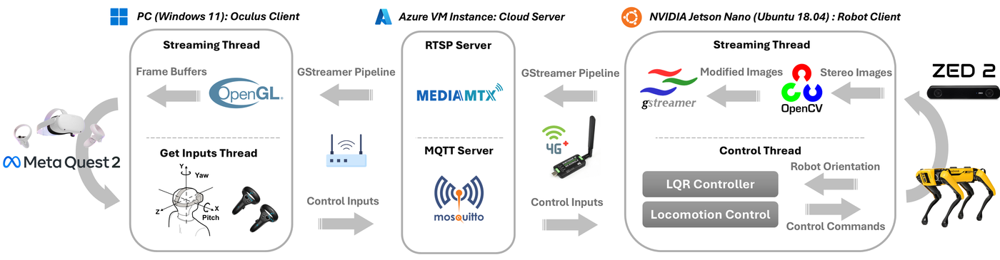
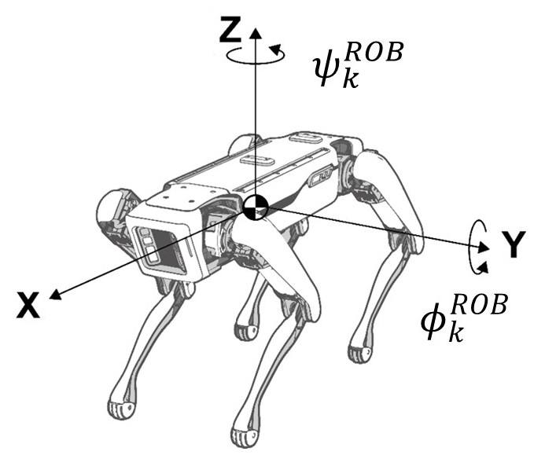
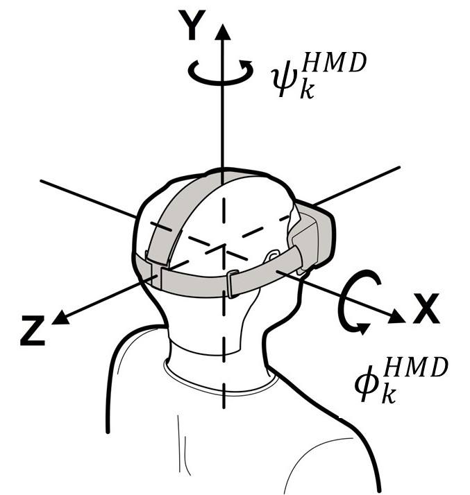

System architecture
The architecture comprises three nodes: the robot client, the cloud server, and the Oculus client.
{kind=link}

System architecture. (1) Robot client: streaming thread for video acquisition and a control thread for head-orientation tracking and locomotion. (2) Cloud server: RTSP for video and MQTT for control. (3) Oculus client: streaming thread for video feedback and an input thread for HMD and thumbstick commands.
Robot client
Spot carries an NVIDIA Jetson Nano in a 3D-printed payload case together with a ZED 2, a power module, and a SIM7600G-H 4G dongle.
Streaming thread
Captures stereo images from the ZED 2 at \(1280 \times 720\) and \(60\,\mathrm{fps}\) in OpenCV format.
Adjusts the frames so the displayed field of view is comparable to the stock Spot tablet (fair comparison in the user study).
Injects frames into the GStreamer transmitter pipeline (see Real-time streaming).
Reaches the cloud through the 4G dongle.
Control thread
Subscribes to MQTT topic
oculus/inputs.Runs head-orientation tracking (LQR) and locomotion (dead-zone thumbstick map).
An inner loop measures robot orientation from the Boston Dynamics state service and applies the orientation commands through the whole-body controller.
Entry point: scripts/spot_client/spot_client.py.
If the 4G interface drops, the client restarts the simcom_wwan
service and waits before resuming commands.
Cloud server
A Google Cloud or Microsoft Azure virtual machine with a public IPv4 address hosts:
MediaMTX — RTSP server. Default publish/play URL used by the clients:
rtsp://<public-ip>:8554/spot-stream
Mosquitto — MQTT broker on port 1883. Control topic:
oculus/inputs
Payload: a JSON array of six floats
[pitch, yaw, roll, stick_x, stick_y, stick_rot]published at \(20\,\mathrm{Hz}\) (50 ms period inoculus_client.py).
Oculus client
A Windows 11 PC is tethered to a Meta Quest 2 HMD and controllers. The evaluation machine was an ASUS G713PI (AMD Ryzen 9 7845HX, NVIDIA GeForce RTX 4070, 16 GB RAM). Two threads run on the PC:
Streaming thread (
src/main.cpp, executableZED Stereo Passthrough) — pulls the RTSP stream through GStreamer, decodes H.264, and renders left/right images to the HMD with OpenGL and the Oculus PC SDK.Input thread — reads HMD IMU measurements and thumbstick axes and writes a 6-float binary record to a Windows named pipe
\\.\pipe\MyPipe.scripts/oculus_client.pyreads that pipe and publishes JSON to MQTT.
Coordinate frames
{kind=link}

{kind=link}

Frame definitions for the Spot base (left) and the HMD (right). Pitch in the HMD frame is defined in the opposite direction of the robot body-fixed pitch, which is why the LQR reference uses \(-\phi_k^{\mathrm{HMD}}\).
See Boston Dynamics geometry and frames and Meta sensor documentation.